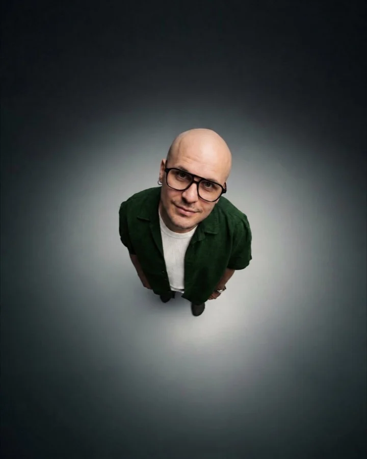
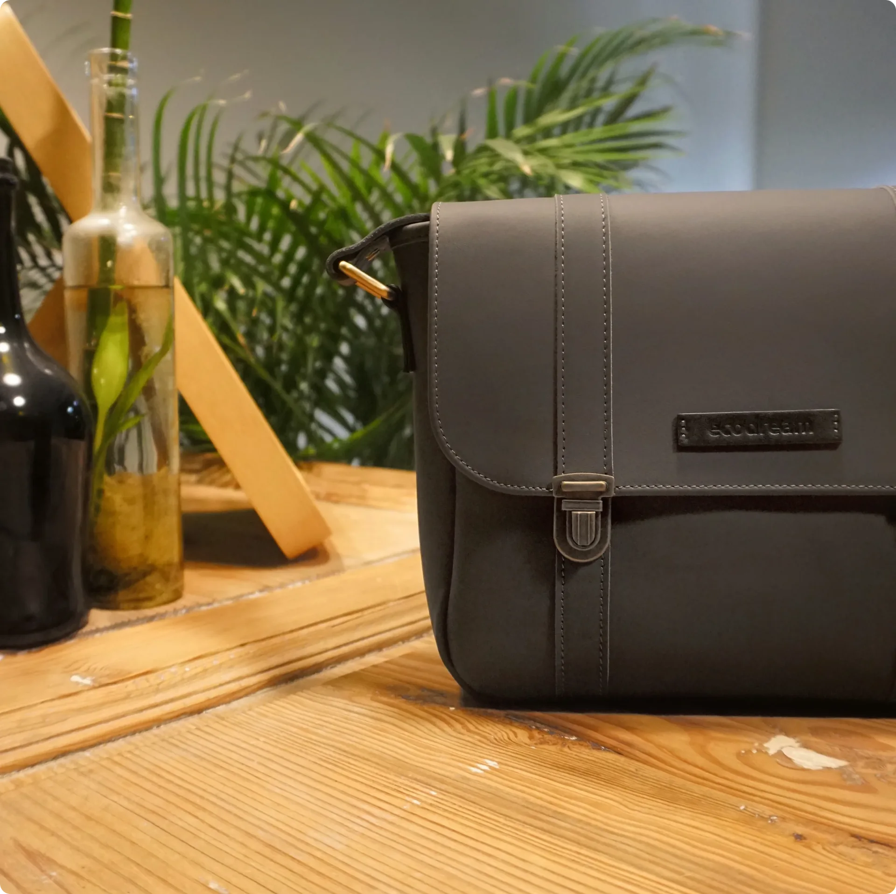
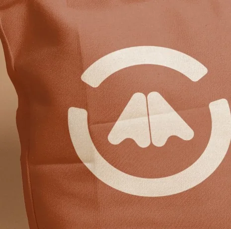

La tua banca
24.580 €
PROGETTO / 001
La banca,
ripensata.
Intesa Sanpaolo · Concept personale
Un redesign personale per rendere più chiare le operazioni bancarie, dai pagamenti quotidiani agli investimenti.
Sono Michele. Progetto esperienze digitali chiare ed espressive all’incrocio tra finanza, tecnologia e IA.
SCORRI PER ESPLORARE ↓
Unisco pensiero visivo, design centrato sulle persone e tecnologie emergenti per rendere semplice ciò che è complesso.
Un redesign personale per rendere più chiare le operazioni bancarie, dai pagamenti quotidiani agli investimenti.
Un’esplorazione pratica dei test di usabilità per osservare il comportamento delle persone e migliorare le esperienze digitali.
Un flusso conversazionale che combina automazione, revisione esplicita e controllo umano.
Un approccio visivo per seguire progetti, responsabilità e scadenze, pensato per dare chiarezza ai team.

Un sito web realizzato per Ecodream: il progetto dedicato al brand e alla sua presenza digitale.

Un’identità visiva per raccontare il turismo rigenerativo, dal simbolo agli asset digitali.
01 / 04
Il buon design nasce da una serie di decisioni. Con questo metodo traduco bisogni reali in interfacce utili e coinvolgenti.
Esploro il contesto, definisco il problema e individuo le persone a cui si rivolge l’esperienza e i loro bisogni.
Trasformo i risultati della ricerca in percorsi chiari, architettura dell’informazione e primi wireframe.
Definisco un linguaggio visivo, disegno interfacce dettagliate e creo animazioni al servizio dell’usabilità.
Creo prototipi, testo le attività principali e miglioro il progetto in base all’esperienza delle persone.
Mi interessano i prodotti digitali che rispondono a bisogni reali, le collaborazioni e le idee da esplorare.